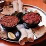

Kitfo

This famous meal is well known for it's rich recipes and spicy taste to it.
It's origin is in Ethiopia. The food is also regarded as best quisine in the country.
It's special and strange the same time.The fact it being raw is strange to some and unique
to other but special to the people of Ethiopia.
Ingredients include:
- Riceminced raw lean beef
- Beanspices (the classic Ethiopian spice blend known as mitmita)
- Tomatoan herb-infused clarified butter known as niter kibbeh
Steps to make one:
- You melt some Ethiopian butter ( niter kibe)
- combine it with freshly ground beef
- toss in the requisite spices
Home
Burito
Shawarma